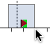
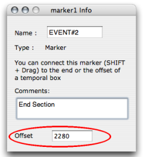
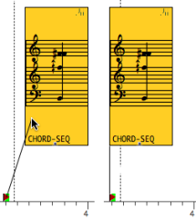

OpenMusic DocumentationHiérarchie de section : OM 6.6 User Manual > Maquettes > The Maquette Editor > Markers / Anchors
OpenMusic DocumentationHiérarchie de section : OM 6.6 User Manual > Maquettes > The Maquette Editor > Markers / Anchors
Navigation : page précédente | page suivante
Attention, votre navigateur ne supporte pas le javascript ou celui-ci à été désactivé. Certaines fonctionnalités de ce guide sont restreintes.
Markers and Temporal Anchors
Markers are designed as pivots to define the beginning or the end of Temporalboxes. These markers are placed on the temporal axis of the editor.
Setting Markers
Creating Markers
To create a marker, Cmd click on the ruler. A small red triangle appears.
Moving Markers
To move a marker :
select it
use the mouse or the
→and←keys.Add
SHIFTto move faster.
Deleting Markers
To delete a marker :
select it by a click and drag 
press
Backspace.
Locating and Editing Markers: the Info Window
Offset, Name, Documentation
The location, name and documentation of a marker can be specified.
|

|
Using Markers as Temporal Anchors

|
To lock the temporal position of a box :
To delete an anchor, select the connection and press |
Références :
Plan :
Navigation : page précédente | page suivante
A propos...(c) Ircam - Centre Pompidou